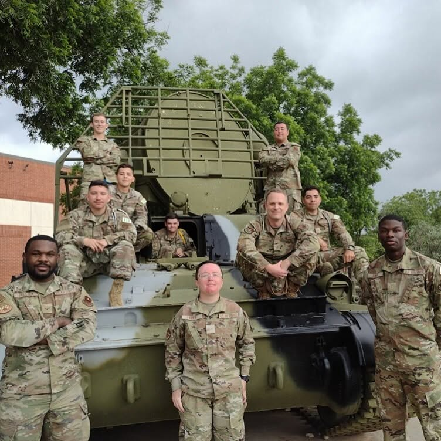

U.S. Air Force Veteran · Top Secret Clearance
Edward Stone
Full-Stack Developer & AI Builder
I spent years turning incomplete, high-stakes intelligence into decisions people could act on. Now I build the AI agents, automation, and software that do that work at scale.
About
Discipline isn't a personality trait for me. It's training.
As a U.S. Air Force Reserves Intelligence Analyst holding a Top Secret clearance, I spent years turning incomplete, high-stakes information into decisions people could act on. Across two deployments supporting U.S. Central Command (CENTCOM) missions, I learned to stay precise under pressure and to own the outcome — no excuses, no theater.
I bring that same rigor to software. I build AI agents, automation pipelines, and full-stack products end to end with Claude, Cursor, and Codex — comfortable across JavaScript, TypeScript, React, Next.js, Node.js, Python, and SQL. In 18 months of California State Department IT, I ran Tier 1 service desk support — resolving 1,000+ ServiceNow incidents across Windows, Microsoft 365, and Active Directory — led 20+ trainings, and wrote 30+ SOP and knowledge-base articles for the people who depend on it.
I'm completing a B.S. in Economics & Management Information Systems with a Computer Science minor at CSU Sacramento (expected May 2027), with CompTIA Security+ scheduled for July 2026. I'm also an Eagle Scout — I finish what I start.
- TS Clearance
- 2 Deployments
- 20+ Trainings led
- 30+ SOP & KB docs

Service first
Before I shipped production code, I served — two deployments as an intelligence analyst supporting U.S. Central Command (CENTCOM) missions. The mission mindset never left: clarity over noise, accountability over excuses, and the people who depend on the work over personal ego.
— A standard I still build to.
Capabilities
AI & Automation
Data & Analysis
Enablement
Selected Work


BidSignal
A government-contracting decision engine. It reads federal solicitations, scores fit, and returns a verdict — PRIME, TEAM, SUBCONTRACT, or IGNORE — so small businesses stop guessing which bids are worth chasing.
Opslayer
An AI job-search pipeline that scans portals, scores roles, and drafts tailored, ATS-ready application materials — with durable checkpoints and a human in the loop before anything ships.

Operator Brain
A multi-agent control layer built on Claude that routes work across projects, enforces guardrails, and keeps a shared memory and learning loop — so AI tools collaborate instead of colliding.
The one-page brief
Experience, technical skills, education, and service record — formatted for both humans and applicant tracking systems.
Download Résumé (PDF)Make contact
I'm looking for entry-level technical roles and fellowships where I can keep shipping real software. The fastest way to reach me is email.